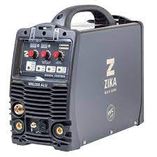

welding mechine by zika
welding meching by zika

| title | 1 | 2 | 3 | 4 | 5 | proudact name and picture | zika 200g | zika 200alu |
|---|---|---|---|---|---|
| Info | welding mechine by zika |
welding meching by zika |
|||
| buyers review | |
|
|||
| site computer review | |
|
הרעיון: אתר ביקורות נוח לשימוש ואסטתי (קצת מצחיק לכתוב דבר כזה באיך שהאתר נראה כרגע....), המראה השוואה םשוטה ומפורטת בין מוצרים כגון: טלפונים, מכונות ריתוך, מחשבים וכו... ועד אפילו רכבים או דירות. הרעיון הוא שמשונה מאתרים עם ביקורות שמציגות ביקורות ותגובות של אנשים על מוצר ספציפי בלחוד בלי השוואה ממוצרים דומים אחרים, באתר גם יהיה ביקורות ודירוג על מוצר מסויים בלחוד אך יהיה גם אפשרות להשוואה מול מוצר דומה שיכלול בהשווה טווחי המחירים, דירוגים של אנשים שרכשו את המוצר, אפילו אולי מאמרים על המוצר, ודירוג ממוחשב שיתן ציון למוצר לפי אלגוריתם. ובכך להביא את הלקוח לבחירה הטובה ביותר בשבילו לפי השיקולים שלו.